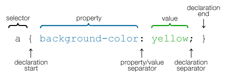
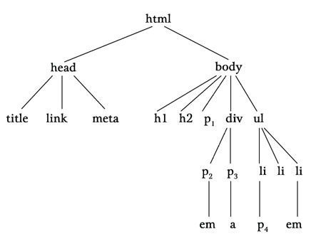

CSS选择器
CSS选择器是CSS学习的一个重点，它是CSS与HTML交流的桥梁。
CSS选择器，粗糙的可以分为三大类：基本类、组合类、伪类。
- Basic selectors
- Type selectors
- Class selectors
- ID selectors
- Universal selectors
- Attribute selectors
- Combination selectors
- Adjiacent sibling selectors
- General sibling selectors
- Child selectors
- Descendant selectors
- Pseudo selectors
以上分类基本包含了所有类型的选择器分类，它们有共同点，语法基本相同, 不同的点也有不少，最大的不同是组合类别和伪类看上去很复杂，看我一一道来。
Synax:
selecor { Property: Value;}
1、基本类
基本类别的选择器其实没有特别多注意事项，搞清楚基本语法以后很快能用上了， 
See the Pen obvvWZ by Tab (@ivanberry) on CodePen.
自己学习的时候没有发现，这个属性的值还支持中文，这很是友好呀！上面的实例充分展示基本类别的选择器，元素名匹配，类名匹配，ID匹配,全局和属性匹配。
2.组合类
组合类选择器与HTML树结构紧密联系，具体学习之前，很有必要清楚HTML树形结构。
树形中存在的各种元素，它们之间存在一定的关系，父子关系、继承关系、毗邻关系等等。正如上图所示，父子关系是指某元素直接是另外 html是head、body的父元素,head又是title,link,meta的父元素，它们之间都是直接的父子关系。
还有一种包含有上面提及的父子关系：继承关系，如图，body是html的父元素，h1,h2,p,div,ul都是 body的子元素，但是它们却不能称为html的子元素，而是继承，更加直白的说就是后代关系，和生物学的族谱很是类似，不止有父子 还有祖孙关系。毗邻关系就简单了，有相同父元素的两元素，如图中的，h1和h2就是毗邻关系，类比就是兄弟关系，但是h1和a就不是兄弟关系啦， 这样说明还是挺能理解的吧。
背景知识了解完后，开始梳理组合选择器，组合选择器中用的最多大概有4种，如下表：
组合选择器类别
- Child selectors
A > B,父子关系，上图中的ul和li之间- Descendant selectors
A B,继承选择，上图中的div与em a- Adjacent sibling selectors
A + B- General sibling selectors
A ~ B
还是举例子容易说明：
See the Pen qbWaMW by Tab (@ivanberry) on CodePen.
3.伪类
伪类元素是选择器中相对复杂的一个知识点，它们的存在提供了我们选择不一定在HTML中存在的节点，市面上现代浏览器对伪类的支持 相对较好。
3.1 Pseudo-class
首先学习Pseudo-class，是因为现代浏览器对它的支持更好，实际使用中使用最多的就是关于a的不同状态。我们先认识下它们。
- :link
- 未访问超链接
- :visited
- 已访问超链接
- :focus
- 比如网页浏览Tab键选定某超链接
- :hover
- 鼠标在元素上
- :active
- 被用户激活，例如选取超链接并按住鼠标
- 以超链接举例，但是这几个伪类适用于任何元素
- CSS中出现的顺序很重要，推荐使用link-visit-hover-active（LVHAC,LV哈)
惯例个栗子：
See the Pen VeZmZK by Tab (@ivanberry) on CodePen.
Pseudo-elment slectors
CSS2.1中定义了4种伪类元素：首字母类，首行，之前与之后，也不知道标准是翻译成什么，我暂且写成这样子， 实际应用看我举的栗子。
See the Pen bEbgKd by Tab (@ivanberry) on CodePen.
根据W3C标准来看，基本可以按照表面文字意思理解，应用时，还有一些细节需要把握， 伪类元素并不适用于所有的属性，对于:first-letter和:first-line见下表：
| :first-letter | :first-line |
|---|---|
| All font properties | All font properties |
| color | color |
| All background properties | All background properties |
| All margin properties | word-spacing |
| All padding properties | letter-spacing |
| All border properties | text-decoration |
言在最后，通过各类选择器，运用基本语法，适用各种属性值，我们可以更改内容版式等，大大丰富网页内容， 使它们不会过于呆板。更重要的是，正如上面学习一样：实现很是容易。